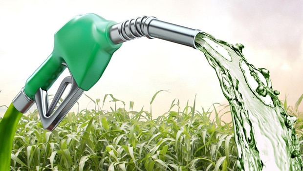

28 de Maio de 2017
O Etanol
O Etanol é um combustível produzido através da fermentação de vegetais como Cana-de-Açúcar, é um
biocombustível altamente inflamável e incolor, sendo muito utilizado em automóveis. Essa substancia é
renovável, pois sua matéria-prima é obtida através de plantas cultivadas pelo homem.
Pode ser feita com Cana, Milho, Mandioca, etc. A matéria-prima é submetida a uma fermentação alcoólica.
Porém, a cana é a mais utilizada, pois apresenta maior produtividade. Após ser processado, o etanol pode ser
utilizado puro ou misturado com gasolina, como combustível.
O Brasil se destaca no cenário global como sendo o país com tecnologia mais avançada na fabricação de etanol.
A produção mundial desse combustível é da ordem de 40 bilhões de litros.

Estes são os 10 maiores produtores de Etanol no Brasil.
| Estado |
Quantidade em Mil M³ |
| São Paulo |
6185,28 |
| Minas Gerais |
1104,85 |
| Goiás |
1096 |
| Mato Grosso do Sul |
646,12 |
| Mato Grosso |
523,51 |
| Alagoas |
333,04 |
| Paraíba |
208,7 |
| Pernambuco |
200,16 |
| Maranhão |
144,70 |
| Tocantins |
127,94 |
Curiosidades sobre o Etanol
- O etanol é uma substância altamente energética. Meio litro de uísque, por exemplo, contém cerca de 1650
kilocalorias, quase metade da necessidade diária média de um homem adulto (3300 kilocalorias). Povos antigos,
como os sumérios, utilizavam a cerveja como fonte cotidiana de alimentação, consumindo o produto em uma
espécie de pão líquido.
- Apesar de ser a melhor matéria-prima do etanol, a cana-de-açúcar produz muito menos etanol que o milho por
peso. Uma tonelada da planta produz entre 85 e 90 litros de álcool, enquanto a tonelada do milho rende mais de
400 litros. A vantagem da cana deve-se ao custo e à facilidade em quebrar suas molúculas de açúcar. Em média,
a fermentação do açúcar da cana leva de 10 a 12 horas, enquanto o milho demora de 38 a 45 horas. Outra
vantagem é que um hectare de plantação de cana-de-açúcar produz em média 80 toneladas do produto, enquanto a
mesma área de plantação de milho produz apenas de 15 a 20 toneladas.
- Além dos automóveis, o etanol também pode ser combustível de motocicletas, caminhões, ônibus e até de
aviões. Desde 2007, as aeronaves Ipanema da Embraer, usadas na agricultura, possuem modelos que operam a
álcool.
- A cana-de-açúcar é uma biomassa que pode ser transformada quase que totalmente em energia aproveitável
através de processos industriais, que na sua maioria, já são dominados e conhecidos e apresentam alto índice
de aproveitamento dos subprodutos e, relativo baixo impacto ambiental.
Referências Bibliográficas
- Martins, J., and Carlota Saldanha Silva. Bioquímica em Medicina. Vol II. joão martins e silva, 2010.
- Etanol, Wikipédia, disponível em: <https://pt.wikipedia.org/wiki/Etanol>, Acesso em: 20/04/2017.
- Etanol: definição, o que é, resumo, características, Sua Pesquisa, disponível em: <https://www.suapesquisa.com/o_que_e/etanol.htm>, Acesso em: 28/04/2017.
- Nova Cana: Tudo sobre Etanol, cana, açúcar e cogeração, Nova Cana, disponível em:<https://www.novacana.com/>, Acesso em: 15/05/2017.